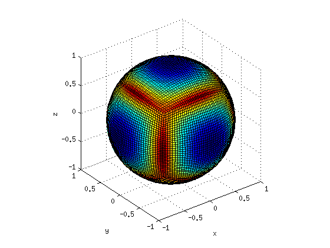
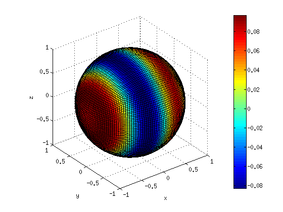
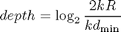
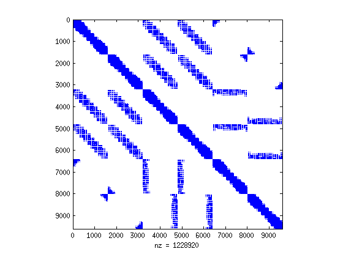
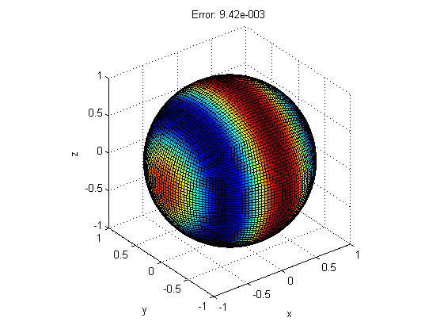

Exterior Dirichlet radiation problem
This tutorial shows how to use the toolbox NIHU to compute a simple acoustic radiation problem with Dirichlet boundary condition.
Contents
Mesh generation
Use a toolbox function create_sphere_boundary to create a sphere mesh with given radius and division parameter. Determine maximal wavelength applicable to the mesh with a given element-per-wavelength ratio, using the toolbox function bemkmax
R = 1; % radius nR = 20; % division parameter mesh = create_sphere_boundary(R, nR); ratio = 7; % element-per-wavelength ratio kmax = bemkmax(mesh, ratio); k = min(kmax); figure; plot_mesh(mesh, kmax); view(3);
Excitation
The excitation will be the pressure field of a point source located inside the sphere, slightly shifed from the center. Constant elements are used with one DOF located at the element centers, so the pressure is computed in the element center locations. For error analysis purposes, the analytical pressure derivative values are also computed. The element centers and normals are determined by a toolbox function centnorm, and the incident wave field is computed by the toolbox function incident.
r0 = [-.2 0 0]; % location of the source monopole [cent, normal] = centnorm(mesh); % element centers and normals [ps, qs0] = incident('point', r0, cent, normal, k); figure; plot_mesh(mesh, ps); view(3); colorbar;
Build cluster tree
The cluster tree is built with the toolbox function clustertree. The depth of the tree is determined by the mesh's dimensions and the minimal dimensionless cluster size at the leaf level as

kdmin = 3; % minimal dimensionless cluster size at leaf level kD = 2*k*R; % mesh dimension depth = round(log2(kD/kdmin)); [tree, fs, fr] = clustertree(depth, cent);
Sparse matrices
The near field sparse bem matrices are determined by the toolbox function bemHG. The sparsity structure (location of nonzeros) of these matrices is determined using the cluster tree by the toolbox function nfij
[i, j] = nfij(tree(end).nearfield, tree(end).nodsou);
[Hnf, Gnf] = bemHG(mesh, k, 'const', [], [i j]);
figure;
spy(Hnf);
 FMM integration parameters
The expansion lengths, the quadrature points over the unit sphere and the precomputed translation operators and interpolation matrices are generated by the toolbox function integpar.
C = 3; % Accuracy parameter related to the expansion length
I = integpar(tree, k, C);
BEM spatial quadrature and relative tree
The Gaussian integration points and weights on the surface are computed by the toolbox function geo2gauss. The parameters of the function are the mesh and the quadrature points for triangles and quadrangles, respectively.
In order to optimally use the C (MEX) code, the tree is converted into a relative tree that contains distances between entries rather than absolute locations.
[t, gs, gn, w, gind] = geo2gauss(mesh, [3 9]); [tr, rr, rs, ns] = reltree(tree, cent, fr, gs, fs(gind), gn);
Solution
The right hand side of the linear system of equations is computed now. The near field part is computed by multiplication by the near field matrix, the far field contribution is computed by means of the MLFMA, using the toolbox function mpcont_Gq.
Hp = Hnf*ps + -2*pi*ps + ...
mpcont_Hp(rr, rs, ns, ps(gind).*w, tr, I, k, fs(gind), fr);
The iterative solution of the system of equations is computed by the toolbox function my_gmres, where the matrix-vector products are evaluated by the toolbox function gmres_iter_dirichlet.
m = 100; % max. number of iterations tol = 1e-3; % prescribed backward relative tolerance [qs, eps] = my_gmres(... @(q) gmres_iter_dirichlet(q, Gnf, rr, rs, w, gind, tr, I, k, fs, fr),... Hp, m, tol, speye(size(Gnf)));
Iteration: 1, residual: 4.454880e-001 Iteration: 2, residual: 3.003006e-001 Iteration: 3, residual: 1.234620e-001 Iteration: 4, residual: 3.913409e-002 Iteration: 5, residual: 2.714825e-002 Iteration: 6, residual: 2.462790e-002 Iteration: 7, residual: 2.216687e-002 Iteration: 8, residual: 2.000439e-002 Iteration: 9, residual: 1.953523e-002 Iteration: 10, residual: 1.923569e-002 Iteration: 11, residual: 1.890274e-002 Iteration: 12, residual: 1.757445e-002 Iteration: 13, residual: 1.359434e-002 Iteration: 14, residual: 1.265646e-002 Iteration: 15, residual: 8.420311e-003 Iteration: 16, residual: 6.443942e-003 Iteration: 17, residual: 4.782193e-003 Iteration: 18, residual: 3.576773e-003 Iteration: 19, residual: 2.965318e-003 Iteration: 20, residual: 2.541211e-003 Iteration: 21, residual: 1.940346e-003 Iteration: 22, residual: 1.605770e-003 Iteration: 23, residual: 1.390790e-003 Iteration: 24, residual: 1.177304e-003 Iteration: 25, residual: 9.040387e-004
The solution is plotted with the toolbox function plot_mesh, and is compared with the analytical solution
e = norm(qs-qs0)/norm(qs0); % relative error figure; plot_mesh(mesh, real(qs)); view(3); title(sprintf('Error: %.2e', e));